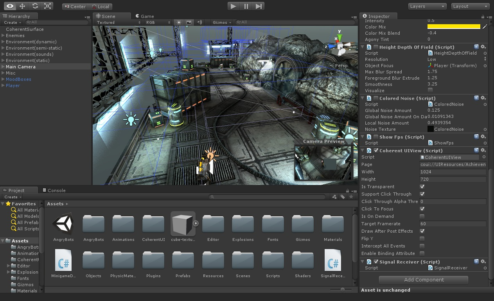
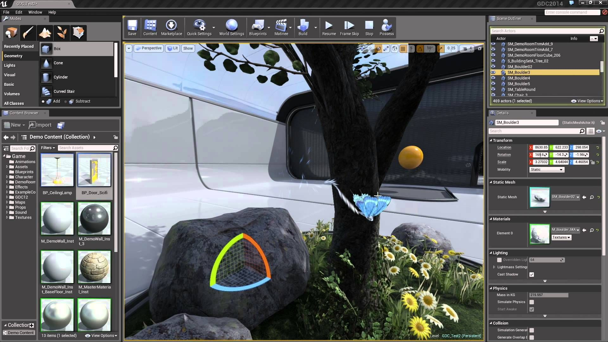
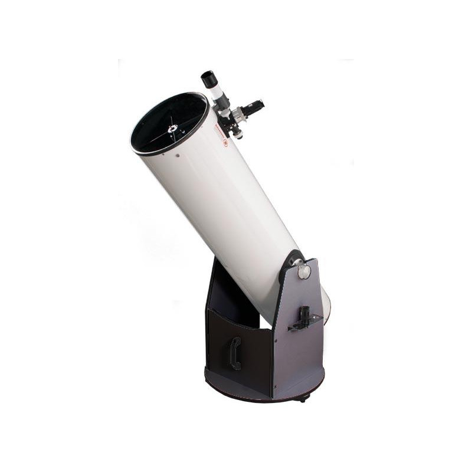

Machine Learning - Pattern recognition
Dziedzina zajmująca się wyszukiwaniem wzorców na określonych danych. Wszystko opiera się na odpowiednio nauczonych modelach, które później można stosować do rozpoznawania.Model YOLO, rozponujący m.in pojazdy ruchu drogowego.

Silniki - Gry komputerowe
Silniki do tworzenia gier komputerowych, napędziły branże gier Indie do niesamowitego poziomu. Niemal każdy, kto choć trochę poznał C++ lub C# może stworzyć prosty komercjalny produkt. Chociaż większość większych producentów stosuje swoje własne rozwiązania, to istnieje również wiele średnio budżetowych firm, używających poniższych silników.Unity Game Engine. Pomimo nie najlepszej optymalizacji, pozostaje najpopularniejszym silnikiem.

Unreal Engine. Drugi najpopularniejszy silnik, częściej stosowany przez firmy, niż amatorów. Cechuje się świętną oprawą wizualną.

Astronomia
Co zaś się tyczy moich zainteresowań pozainformatycznych, to napewno można wyróżnić astronomię.
Korzystając z dobrodziejstw dzisiejszego świata mogę obserować obiekty głębokiego, tudzież planety układu słonecznego w niesamowitym przybliżeniu, korzystając choćby z takiego sprzętu:

Na zdjęciu GSO Dobson telescope N 300/1500